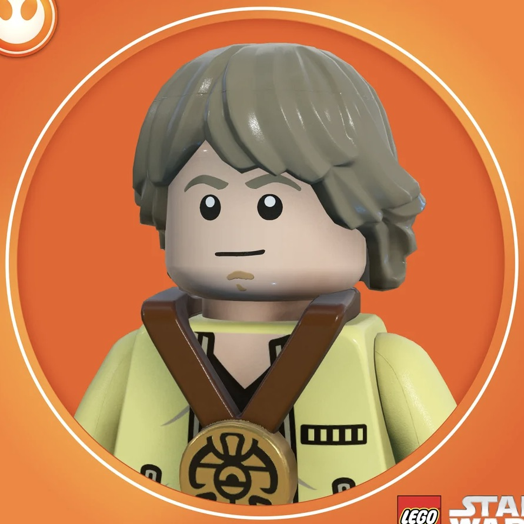

Master Yoda… I’ve found someone. A potential new hope for web development.


Hrrm? Strong in the source code, are they?
Yes, her name is Anika. She’s a third-year student at UNSW, doing Software Engineering and Commerce.
Hmm… code and commerce. A rare balance, that is. Practical and creative, she must be.
Exactly. She's got an eye for design and a love for storytelling.
Photography, web aesthetics, she captures life through both lenses
Ahhh, sees the world with detail, she does. Through pictures…revealed the truth is.
She wants to bring logic and interactivity together to build things that feel meaningful.
Purpose, she has. Curious and focused, she is. A learner, not just a coder.
She’s also borderline anemic, lactose intolerant but still somehow manages to radiate positivity.
Strong with the Force, indeed. Milk she cannot drink… yet hope, she still pours.
Powerful that is.
Do you think she’s ready?
Ready, perhaps not. But worthy? Absolutely.
Give her a chance, the DevSoc Council must. The path of a Master web developer, she is destined to walk.